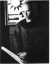

The Bauhaus Idea and Bauhaus Politics
|
Chapter 6. Breathing Exercises
Full text
- 1 Friedhelm Kroll. Bauhaus 1919-1933: Künstler zwischen Isolation und kollektiver Praxis. Bertelsman (...)
- 2 Gropius. 'An die Werkstättenleiter', 22 April 1922, Bauhaus Archiv. Berlin, Gropius documents, uni (...)
1FROM the outset the internal structure of the Bauhaus was hierarchic, the tip of the pyramid occupied by the person of the director, Gropius. He had the right to decide about any and all organizational, personal or educational matters, unless it was an issue to be deferred to parliament or outside authorities. His immediate right-hand associate was the legal counsellor, who also handled financial and administrative matters. The director presided over the Masters' Council consisting of the artist-instructors. According to Friedhelm Kröll,1 their order of precedence was determined by their artistic rank and reputation prior to their involvement with the Bauhaus. Kröll's opinion is confirmed both by subsequent events and also by Gropius's letter to Ernst Hardt, quoted earlier, in which he emphasized the necessity of attracting to Weimar well-known and important artists, 'even if, deep down, we cannot fully comprehend their innermost meaning at this time.' This strategy, aiming at the enrichment of the school's intellectual climate and prestige, forced Gropius into a series of moves diametrically opposed to the letter and spirit of the Manifesto. For if it was true that among the hallmarks of the Bauhaus the names of Kandinsky and Klee carried the greatest weight and brilliance, had Gropius adhered to his own programme announced in the June 1919 address which stressed the importance of craftsmanship, neither of the two would have been invited to the Bauhaus. The crafts masters were not included in the Masters' Council; they had no votes, and were consulted only as occasional advisers, much like the student representatives. Even though crafts training occupied the central position in the original Bauhaus concept and in the school's curriculum, implying that art was relegated to a highly respected sphere that was outside and above the school's concerns, all the same, Groplus was adamant In his response to the crafts masters' demand for an equal voting presence on the council: 'It is essential for the work of the Bauhaus that the artists have a greater voice in issues involving the crafts, which can be learned, rather than the other way around, for art is not a matter of profession but of vocation ... The composition of the Masters' Council corresponds to the historical evolution of the Bauhaus, which owes its concept and Inception not to craftsmen but to artists. . . And this is a spiritual, not a technical, concept. . . Only those have the right to determine the aims and direction of our work who had a share in defining and formulating this concept.'2
2Naturally, the medieval guild-ideal, the neo-Gothic dream of a community of equals, artists and artisans working harmoniously side by side, steeped in the same faith, was not going to be realized. But not for a lack of electrical charge in the air, which was there in abundance to provide a spark for the creation of such a community of artists. However, there was no true democratic model in existence to prevent this, at first barely perceptible, tendency at the Bauhaus from growing into a tragic flaw: the school was compelled to try to establish a power-base of some sort, in order to survive among so many foes who certainly did not believe in mutual tolerance.
3From the first moment the Bauhaus was forced Into an ever exacerbating schizophrenia: while Gropius was actually thinking of 'mass-produced buildings' and high technology, in public he had to speak about crafts; when he committed himself to the ideals of craftsmanship, he found himself opposed by the conservative painters of the academy, and when he wanted to realize his modern design ideas by smuggling them into the crafts programme, the watchful eyes of the Thuringlan parliament demanded to see evidence of his loyalty, and only after the exhibition of objects designed to please the tastes of Weimar would it promise the continued support upon which the school's survival depended. Given this scenario, if Gropius had followed the 1919 Manifesto to the letter, and placed the fate of the Bauhaus in the hands of technically outstanding master craftsmen who were nonetheless insignificant from a national and international point of view, the school would not have survived its first year. At best it would have turned into an abject, postwar version of the former institution directed by van de Velde, surviving reduced into a mere department at Max Thedy's popularly approved and thriving academy of painting. Whereas Gropius, as he said in his letter to Hardt, Intended to bring about 'a great Whole', an autonomous and self-governing realm that would become a factor to be reckoned with in German culture and on the international scene. For this, politics was indispensable, as was the broadest kind of publicity. He needed names that would ring a bell; he had to win over artists of the highest renown and reputation, whose presence would secure international support - as well as members of the younger generation who had made a name for themselves in the sphere of the avant-garde. Since he was constantly forced to be on the defensive, he had to strive for a position of power; the show of strength became a prerequisite of survival, even if such strength came from the outside, in the face of the local powers and the suffocating public opinion of Weimar. This struggle for power and a position of strength was reflected multifold within the school, and set the scene for the paradigmatic conflict at the Bauhaus between Gropius and Johannes Itten, during the years 1919 to 1922.
- 3 Johannes Itten. Design and Form: The Basic Course at the Bauhaus. Thames and Hudson, London, 1964. (...)
- 4 Rainer Wick. Bauhaus Pädagogik, DuMont, Cologne. 1982, p. 81. See also Gladys Fabre's essay in Kri (...)
4Itten was the only one among the Bauhaus masters with pedagogical training - he had several years of experience as a teacher and art instructor. He was born in 1888 at Süderen-Linden, near Bern, Switzerland, the child of a teacher and a peasant girl. Originally intending to be a teacher, in the course of his studies at Bern he became familiar with the pedagogic reform tradition, the teachings of Rousseau, Pestalozzi, Fröbel and Montessori, their empathic and patient methods of education and training. In his memoirs he wrote: 'When I first taught in 1908 at the elementary school of a Swiss village, I tried to avoid anything which would disturb the children's naivety. Almost instinctively I realized that all criticism and corrections offend and destroy self-confidence, while encouragement and recognition further the growth of abilities.'3 For example, he corrected spelling mistakes by reading the children's essays, noting the mistakes, and then writing the misspelled words on the blackboard, without mentioning the names of the children who made the mistakes. Like Goethe, Itten was also convinced that one of the main goals of education is the preservation and fostering of childhood genius, of the wholeness and integrity of the child's world view. He saw a dangerous force in the rules and regulations of the school system, so alien to the child, and in the face of which one had to strive to keep the individual values of the child. In Vienna he was not the only one with such pedagogical views. At Franz Cizek's private academy there was no academic drawing instruction whatever. There, too, first and foremost the students' inner impulses were allowed to come to the forefront, and they were encouraged to use the most varied materials, which were glued, nailed, or the like, to compose pictures. According to some, Itten was a follower of Cizek, while in the opinion of others Cizek borrowed from Itten.4
{kind=link}
{kind=link}
- 5 Itten 'Zur Ausstellung "Aus meinem Unterricht'", 1939; quoted by Rainer Wick. op. cit., p. 101. an (...)
- 6 Ibid.
- 7 Ibid.
- 8 Gyula Pap in personal communication, Budapest, 1978, and Itten, The Art of Color, Van Nostrand Rei (...)
5As Rainer Wick notes, Itten ultimately did not believe in a progamme narrowed down to the concept of individuality, for 'by preserving the genius of childhood ... he had intended to give a new channel of expression to our entire civilization'.5 In his pedagogy Itten above all strove to avoid a 'sterile intellectualism',6 and endeavoured to achieve a balance according to which 'on the one hand each child has to be taught so that he may develop along the lines of his original, individual character, thereby preserving his creativity, while on the other he has to be acquainted with those principles of artistic creation that must be mastered if he is to be capable of giving form to his original and innovative ideas.'7 Itten constantly held this twofold guideline in view, while keeping the personality Itself as the focal point of his pedagogical work, holding the preservation and unfolding of the marks of Individual character to be of paramount importance. The painter Gyula Pap, who, as a member of the Bauhaus from 1920 to 1923, was also one of Itten's students, recollects that at the first class meeting Itten asked the students to prepare two compositions using their favourite colours. One was to consist of spots - colour areas arranged Into shapes obeying the most involuntary impulses - and the other to consist of geometric forms. When they were finished, the students were asked to stand in a circle holding their two colour compositions in front of them. Itten said, 'Now take a good look at each other, for never again will you stand so nakedly and openly exposed in front of each other.' As Gyula Pap remembers it, the colours chosen showed an astonishing consonance with the natural hues and intensities of each student's complexion, hair, eyes, so that the compositions, to everyone's amazement, indeed seemed to convey individual personalities.8
- 9 Itten, Letter to Eugene Gilliard, February/March 1914; quoted by Wick, op. cit., p. 79.
- 10 About this, Itten writes in Design and Form. p. 8: 'From 1913 to 19161 was a student of Adolf Hölz (...)
- 11 Wick, op. cit., pp. 79-80.
- 12 Itten, Design and Form, op. cit., p. 8.
6Itten did not stay in his post as elementary school teacher. In 1909 he entered the Geneva Academy of Art, but became disillusioned with the academic teaching methods and returned to Bern, where he studied mathematics, physics and chemistry to complete his training as a high school teacher. After taking his examinations, he decided to return to painting. Again matriculating at Geneva, he spent some time studying geometric form elements and their contrasts under the guidance of Professor Eugene Gilliard. He credited these studies with enabling him to obtain a grasp of 'the basic formal elements of all artistic work'.9 However, the decisive influence on his career came in Stuttgart, where, starting in 1913, he studied with Ida Kerkovlus, the student of Adolf Hölzel, one of the foremost art educators of the period. (Kerkovius later became a pupil of Itten's at the Bauhaus.) At Stuttgart Itten was unable to gain admission to the Academy, and Hdlzel, as a professor there, was not allowed to take on private students.10 During the three years spent in Stuttgart, Itten absorbed Hölzel's principal teachings: a colour theory based on Goethe's, including the colour circle; the theory of light/dark contrasts that preoccupied Hdlzel around this time; the method of analysing the works of the classical masters of painting, in the course of which the student investigates the structure and composition of these works; the mode of collaging torn papers, which, during this experimental period of Holzel's, formed such an important part of his approach; the gymnastic exercises that Hdlzel regularly performed and asked his students to perform; and the practice of automatic drawings made in the psychically receptive state following these exercises. Itten used every one of these elements in his own pedagogical work.11 In 1916 at the invitation of one of his students he moved to Vienna, where he opened an art school which soon became well known in the city. He recalled this period in his memoirs: 'We worked on geometric and rhythmic forms, problems of proportion and expressive pictorial composition ... In addition to the study of polar contrasts, exercises promoting relaxation and concentration brought amazing successes. I recognized creative automatism as one of the most important factors in art. I myself worked on geometric-abstract pictures which were based on careful pictorial constructions.'12
- 13 Ibid., p. 9.
7As mentioned, Itten was introduced to Gropius early in 1919 in Vienna by Alma Mahler, Gropius's first wife. He immediately accepted Gropius's invitation to Weimar. He later wrote: 'I was particularly attracted by the studios and workshops and the fact that the Bauhaus was still empty so that the new could be built without much tearing down of the old.'13
- 14 Eva Badura-Triska and Dieter Bogner, Johannes Itten, Museum Modemer Kunst, Vienna; Kunsthaus Züric (...)
8Itten was followed to Weimar by more than twenty of his pupils from Vienna: they formed the nucleus of his rapidly growing camp.14
- 15 Eberhard Roters, Painters of the Bauhaus, Praeger, New York, 1969, p. 50.
Cf. Stefan Kraus. 'Wie au (...)
9Itten wanted to be a high priest himself, and in a much stricter sense of the word than Gropius. He had come to adopt Mazdaznan, one of the quasi-religious movements of the period. Based on the original teachings of Zoroaster in Persia, it was popularized after the First World War by Otto Hanisch, a Leipzig typographer, who changed his name to Dr Othoman Zar-Adhust Ha'nisch; his doctrines might be described as a kind of dualism. The creator of light, Ahura Mazda, is in eternal struggle for world supremacy against Angra Mainyu, the creator of darkness. The duty of humans is to contribute to the victory of light. Mankind becomes fit for the task by freeing itself of everything that aids the enemy; expelling all gross matter from the body by means of fasting, vegetarianism, an ordered lifestyle, and by purging and breathing exercises. In addition, meditation is needed to restore inner calm, as well as a refusal to join the scurrying rat-race of everyday life.15
- 16 Helmuth von Erffo. quoted by Gillian Naylor. Bauhaus, Studio Vista. London, 1968, p. 66.
10These were the teachings that Itten passed on, with all the persuasive power of his hypnotic and charismatic personality, to the youth of the Bauhaus thirsting for a philosophy of life. He had an extraordinary influence. He went about wearing a monk's robe (he himself designed the flowing. Oriental-style crimson outfit), his head shaven, sporting thin wire-rimmed glasses. His students worshipped him; for them, he was indeed the revered high priest. Helmuth von Erffa writes: 'We all hoped for a better life, and those hopes centred, not around Gropius at first, but around Johannes Itten. Gropius might share our simple meals in the Bauhaus canteen, but it was Itten who was a leading spirit in those early days."16 According to Paul Citroen:
- 17 Paul Citroën, 'Mazdaznan at the Bauhaus'; In Eckhard Neumann (ed.), Bauhaus and Bauhaus People, Va (...)
There was something demonic about Itten. As a master he was either ardently admired or just as ardently hated by his opponents, of whom there were many. At all events, it was Impossible to ignore him. For those of us who belonged to the Mazdaznan group - a unique community within the student body - Itten exuded a special radiance. One could almost call it holiness. We were inclined to approach him only in whispers; our reverence was overwhelming, and we were completely enchanted and happy when he associated with us pleasantly and without restraint.
When he returned from Herrliberg [see note 15], we Mazdaznan boys reached the zenith of fulfilment. There were all sorts of gatherings - lectures, exercises, religious services, councils, meals - all unbelievably enthusiastic work over the common goal of perfection, of the sovereign idea. A jealous community was simply unthinkable. And Itten, entrusted with the mysteries of reincarnation and other secrets of the doctrine, by virtue of his weeks in Herrliberg, was our undisputed master and leader.17
11In addition to Itten's personal emanation, his special position in the curriculum of the Bauhaus induced many of the students to consider him to be more than just the most effective and significant master of the school. At the outset of the new semester following the restoration of the former Academy of Fine Art, on 20 September 1920, the Masters' Council held a meeting at which Gropius declared that the atmosphere of crisis had to yield at last to a workmanlike mood, and he emphatically called the faculty's attention to the importance of the dual leadership of the workshops. He stated that
- 18 'Protokoll der Sitzung des Meisterrates'. 20 September 1920, Bauhaus Archiv. Berlin. Gropius docum (...)
the Bauhaus Intends to motivate students equally from both sides, that of art and that of craft. Since today we do not yet possess individuals who move with equal familiarity and at sufficiently high levels in both areas, each student has to learn from two masters, one of artistic form, the other of technical expertise. The most important thing, however, is the combining of these two kinds of instruction, something that so far has only occurred in exceptional cases. In this area we need to make fundamental changes. It seems that we have arrived at the right psychological moment when ... it is imperative that we make the Basic Course required for every single student entering a workshop.18
- 19 Ibid.
12The minutes of the session also note that 'Mr Itten Is prepared to undertake the Basic Course, providing that the closest contact be maintained with the workshops.'19
- 20 Itten, Design and Form, op. cit., p. 9.
13The Basic, or Preliminary, Course itself came into existence when the Bauhaus masters were casting about for a method of determining who was to be admitted to the school. Students arrived at Weimar from the most diverse types of schools in Germany and other countries, prepared by teaching methods of all kinds. Seeing this was the case, Itten proposed to Gropius that a Preliminary Course be instituted as a period of probation during which it would be possible to form an idea of the student's abilities and character. Although Gropius felt that because of administrative complications (tuition, meal plan, etc.) provisional admission was not realizable, the Preliminary Course was already offered during the first semester to matriculated students. At the time it was not a compulsory requirement. 'Walter Gropius generously gave me complete freedom with the structure and theme of the course,' writes Itten.20
- 21 Ibid.
14This course, which, beginning in the autumn of 1920, was a requirement for every student at the Bauhaus, had a threefold task. First, the freeing of the creative artistic powers of the students and the loosening of embedded stereotypes and conventions; second, facilitation of the choice of career, by discovering affinities for certain materials and thereby pointing the students towards that workshop in which they could continue their training most successfully; and, third, instruction in the fundamental principles of design, the basic laws of handicrafts.21
- 22 Wick, op. cit., pp. 89-90.
- 23 Itten. Design and Form, op. cit., p. 12.
15Itten's classes, in accordance with the teachings of Mazdaznan and the method of Adolf Hölzel, began with physical exercises. These breathing and gymnastic exercises served to increase awareness of elements analogous to artistic expression, such as rhythm, momentum and intensity, and brought the students into a state conducive to concentration and creative work. This was followed by a loose sequence of improvisational and constructive exercises.22 Itten introduced each quality and compositional element through its own contrasts to his students, whose assignments included the most thorough experiencing and pictorial representation of contrasts, such as large/small, long/short, broad/narrow, thick/thin, much/little, straight/curved, pointed/blunt, plane/volume, rough/smooth, hard/soft, still/moving, light/heavy, diagonal/circular and fluid/solid. In addition there were assignments relating to colour contrasts and various textural studies.23 Regarding these latter, Itten writes:
- 24 Ibid., p. 45.
I had long chromatic rows of real materials made for the tactile judging of different textures. The students had to feel these textures with their fingertips, their eyes closed. After a short time the sense of touch improved to an amazing degree. I then had the students make texture montages of contrasting materials. The effect of these fantastic creations was entirely novel at that time. In solving these problems the students developed a real designing fever. They began to rummage through the drawers of thrifty grandmothers, their kitchens and cellars; they ransacked the workshops of craftsmen and the rubbish heaps of factories and building sites. A whole new world was discovered: lumber and wood shavings, steel wool, wires, strings, polished wood, and sheep's wool, feathers, glass and tin foil, grids and weaves of all kinds, leather, furs and shiny cans. Manual abilities were discovered and new textures invented. They started a mad tinkering, and their awakened instincts discovered the inexhaustible wealth of textures and their combinations. The students observed that wood could be fibrous, dry, rough, smooth or furrowed; that iron could be hard, heavy, shiny or dull. Finally they investigated how these textural qualities could be represented. These studies were of great value to the future architects, craftsmen, photographers, graphic artists and industrial designers.24
- 25 Itten. 'Tagebuch': in Rotzler (ed.). op. cit., p. 60; quoted In Wick, op. cit., p. 94.
- 26 Itten, Design and Form, op. cit., p. 147.
16Itten placed heavy emphasis on developing the ability of drawing accurately from nature. 'In order to educate the ability to observe with the utmost sharpness and accuracy, the students were assigned to do photographically realistic drawings in colour from nature. I intended to develop the eye, the hand and the memory, that is, I wanted them to know by heart what they saw.'25 Just as important as total fidelity to reality was fidelity to the state of mind, to the feelings to be expressed. 'If a genuine feeling is to be expressed in a line or a plane, this feeling must first resound within the artist. Arm, hand, finger, the whole body, should be permeated by this feeling … One of the cardinal principles of the Chinese ink painter is "Heart and hand must be one.'"26 Music would be playing during Itten's figure-drawing classes, to accompany the movements of the model. The aim this time was not exact representation, but the expression of the body's movements and rhythms. The movements of the hand always had to follow the model's movements.
17One of the basic foundation pillars of Itten's pedagogy was the course in 'analysis of the work of old masters'. These analyses were not art-historical but were intended to develop sensitivity of seeing contrasts, through intense experiencing and empathy. It was not enough that the students captured on paper their impressions of paintings by means of stating light/dark contrasts, and relationships of weight or rhythm. Itten demanded the total emotional absorption of the work. Schlemmer noted in a letter:
- 27 Oskar Schlemmer, Letter to Otto Meyer. Cannstatt, 16 May 1921; in Tut Schlemmer (ed.), Oskar Schle (...)
At Weimar. Itten teaches analysis. He shows slides to the students, who then have to draw certain essential elements, say, movement, the main line, a curve . . . He shows a Gothic figure, and then the weeping Magdalene from the Grünewald Altar. The students are working hard to extract the essence of this very complicated composition. Itten watches their fumblings, and roars: If you had any kind of artistic sensibility, you would not sit there drawing in the face of this sublime representation of tears - the sorrow of the world - you would be dissolved in tears yourselves! With these words, he rushes out, slamming the door behind him.27
- 28 Franciscono. op. cit.. p. 176; also the minutes of the 26 October 1920 meeting of the Masters' Cou (...)
18To ensure a truly close contact between the Preliminary Course and the workshops, as of the autumn of 1920 Itten in effect took charge of the artistic direction of every workshop, with the exception of the Dornburg ceramics studio and the weaving and printing shops. Prior to this time none of the workshops had been under the direction of a specific form master and the students could freely choose among them. The new system, as Marcel Franciscono observes, 'combined with Itten's control of the Vorkurs, effectively gave Itten by far the greatest responsibility for the artistic direction of the Bauhaus.'28
19Itten was prepared for this eventuality: in fact, this is what he had been intending all along. Numerous comments in his private correspondence as well as several aspects of his activities at the Bauhaus indicate that he considered Gropius to be a kind of bureaucrat whom sooner or later he would overshadow, so that the Bauhaus would be imbued by his own intellectual, spiritual and artistic teachings. Already in the autumn of 1919 he wrote to a friend from Weimar:
- 29 Itten, Letter to Matthias Hauer. Weimar, 5 November 1919; in Rotzler, op. cit., p. 68.
For the time being I do nothing, while my students stir up the entire Bauhaus to set things in motion for a totally new beginning. I can already claim the best minds at the school. About one hundred students attend my art-historical analysis class, and this is only a portion of all the students signed up with me. I am going to wipe the slate clean. For the past week I have been ruling the whole Bauhaus - I proposed that we should prepare all sorts of games for the coming weeks. Thus in one stroke I have knocked out the traditional life-drawing academic approach by leading back all creative activity to its roots in play. Those who fail at this in my book fail as artists or students. You may imagine how the young people are stirred up by these ideas planted in receptive minds. In a word, I have turned the whole institute into a flexible, malleable entity, and my task is now to create direction and order out of all this mobile malleability. This gives me joy.29
20Of course these lines make one wonder whether it was the academic system or the one imposed by Gropius that Itten intended to disrupt so as to install his own order. Possibly both. The above evidence unequivocally indicates that Itten strove from the very beginning to have his influence be the definitive one within the school. He worked to have his own markedly distinct artistic and theoretical apparatus hold sway. Since he was a radical innovator, naturally he did not waste much energy on fighting the already vanquished academic tradition, but concentrated instead on his rival Gropius's pedagogical activities. Whose new spirit would fill the Bauhaus: this was at stake.
- 30 Von Erffa, 'The Bauhaus before 1922'; in College Art Journal, 1943. p. 16.
21In the first year of the Bauhaus the two men represented approximately equally powerful factions. Itten was backed by the spirit of the age, which was also well sensed (and exploited) by Gropius, but only as one aspect of a long-range strategy, while Itten lived and expressed the present with the fullest intensity. Itten could project this prophetic excitement and ardour more convincingly not only because of his personal charisma and powers of persuasion, but also because of his unreserved identification with the spirit of the age, while Gropius, to a certain extent, always stayed outside it: he experienced it, but, being temperamentally different from the mystics, he first of all comprehended these experiences. In spite of all his torments, he did not convert from Saul to Paul; he remained a rationalist throughout, In whose life the postwar expressionist-emotional phase remained a brief episode. In addition, in contrast to Itten, he had to constantly keep in mind the position of the Bauhaus as seen from the outside, from the Weimar, Thuringian, national and international perspectives. The years 1919-22 constituted Itten's era, especially 1920-21, when a veritable wave of mysticism swept across Germany. 'Everybody was reading the German mystics, Suso, Tauler, Meister Eckhardt, Jakob Böhme, or Buddha's sermons, or Lao-Tse. In 1930 a member of the youth movement preached on the steps of churches as a new John the Baptist, and later a former medal manufacturer, Werner Heuser, with a long beard and in a long, dark robe, made fiery speeches on the imitation of Christ to packed houses in Weimar. Itten gave him money and lodgings and announced in class after one of Heuser's speeches: "We all heard a prophet.'"30
22Gropius was able to maintain his position of equal strength vis-à-vis Itten because he was the director, and this, in addition to his personal make-up, gave him a greater perspective to see, as if from above, the situation Itten was in the midst of. Itten's horizon was defined by the glittering goal of gaining (informal) supremacy, or decisive influence at least, over the Bauhaus; his aim was to become the spiritual leader and ultimate authority not only of his religious cult and its doctrines but of the entire school. Gropius's horizons were much broader, and he could very well see that the trend represented by Itten was nothing more than one colour in a palette of many hues. In a paradoxical manner, however, Itten's pedagogical activities, notwithstanding his short-range ambitions in 'Bauhaus politics', were and remained valuable and untainted by any political considerations, while Gropius's activities were in the long run always curtailed by the political struggles forced on him as director of the Bauhaus.
- 31 'Protokoll der Versammlung der Meister und Lernenden des Staatliches Bauhauses'. 13 October 1920; (...)
23Their first, actually disguised and indirect, clash came at the 13 October 1920 meeting of the Masters' Council, at which Muche - who was such a close friend and associate of Itten's that we may consider him to be Itten's mouthpiece - 'spoke about the collective. Not about what is usually called a collective, but about a real community. A collective can only come about where there is an actual common goal that cannot be achieved individually, only collectively. In our school, on the other hand, there is a need for subordination, therefore we do not require individual efforts, but endeavour to suppress differences of opinion and mutual criticism. There are two groups at the Bauhaus: teachers and students. We must clarify the position of the students. It is high time that we begin intensive work and secure the optimum conditions for the individual growth of each person.'31
- 32 Ibid.
- 33 Ibid.
24In reply, Gropius said that 'community' had been the motto of the Bauhaus from the start, but there was a danger that it would be Interpreted as 'clique'. 'The community creates itself, it is bom of need, and cannot be created by speeches,' he said.32 Then, in answer to Muche's unstated qualms, he went on: 'Everyone must exercise greater self-discipline. As for art, the less said about it, the better. Art must come about of itself. The results of the past year demonstrate that the students oppose anything they see as constraint and regulation. This kind of neurasthenia is understandable, but we must pass beyond it. Towards this end, we must see to it that students unconditionally submit to the master they have chosen, instead of sporadically attending lectures and criticizing everything.'33
25With this gentle reproach Gropius fended off a sign of potential dissent. However, Muche, in the agreeable role of the teacher defending the students' interests (and student representatives did attend the meeting), by pointing out the gap between the ideal of the collective and its realization at the Bauhaus, had managed to find Gropius's Achilles' heel.
- 34 Roters. op. cit., p. 57.
- 35 Ibid.
- 36 George Muche, Blickpunkt - Sturm, Dada, Bauhaus. Gegenwart. Wasmuth, Tübingen, 1965, p. 168: 'I pr (...)
26Itten's large camp of worshipful followers was not limited to the student body. Among faculty members, Muche was his mainstay, and he even allowed Muche to substitute for him in his absence. To the rest of the Bauhaus, Muche appeared as Itten's fully empowered representative. He himself at first 'regarded the Bauhaus programme with scepticism'.34 He became the form master of the weaving workshop, but, by his own admission, 'the ideas of Ruskin, Mom's and the German Werkbund left us cold. Nothing was more remote from our minds than the medievalism of the Bauhütte [medieval craft guild].'35 Muche, with his quieter, more conciliatory temperament, acted in many instances as the go-between for Itten In his dealings with others. Although he was in charge of the weaving workshop, he cherished specifically painterly ambitions,36 and even though he was Itten's closest and most committed disciple and friend, after Itten's departure in 1923 he became Gropius's unreserved ally in ideology and praxis.
- 37 Itten; see letter to Josef Matthias Hauer; in Rotzler, op. cit., p. 68.
- 38 von Erffa, 'Das frühe Bauhaus: Jahre der Entwicklung 1919-1923'; in WoKraf-Richartz Jahrbuch, Colo (...)
- 39 Von Erffa, 'The Bauhaus before 1922'; op. cit., p. 18.
27Itten found another staunch supporter in the person of Gertrud Grunow, an eccentric autodidact in her fifties, who sought out Itten in November 1919 proposing to give lectures at the Bauhaus about harmony. Itten wrote in a letter: 'At first I was somewhat sceptical, but after some wrangling I decided to persuade my students to sign up for her lectures. I myself sat in on her class and thought she was quite good on certain matters … Her judgment is sound, but I think she is mistaken in many respects. I am going to keep a sharp eye on her.'37 It is not clear how Itten had the 'authority' to admit Gertrud Grunow to the Bauhaus. The students did not take to her with the same degree of enthusiasm as he did. As Helmuth von Erffa writes: 'The most severe attacks against our personalities came in the form of Miss Gertrud Grunow's dance exercises. She was convinced that she could place us, the students, by means of music and a self-induced trance state, into an inner equilibrium that would strengthen and harmonize our creative powers.'38 'She made the extravagant claim of being able to develop any faculty whatsoever. "I could teach you boxing, too," she told a classmate of mine who was endowed with a delicate physique. According to her, man's mind consisted of different layers: matter, reason, intuition, will, etc. It was her task to organize these layers, so we would become good artists.'39
28Gertrud Grunow's activity seemed to stem from a personality that was extremely sensitive and susceptible to occultism. On the basis of contemporary descriptions she appears to have been a caricature of Itten. In a more extreme and less effective manner, with less than Itten's considerable reservoir of personality, she represented the doctrines of the supremacy of intuition, empathy and inner concentration. She was Itten's helper and the supporter of his teachings and his position, without the ability or the intention to surpass him.
- 40 Roters. op. cit., p. 66.
- 41 Wulf Herzogenrath, 'Die Bühne am Bauhaus'; in bauhaus Utopien, op. cit., p. 295; and cf. Kandinsky (...)
- 42 Cf. Dirk Scheper. 'Die Bauhausbühne'; in Experiment Bauhaus, catalogue of exhibition at Dessau, Ba (...)
29There was one other artist at the Bauhaus between 1920 and 1923 who may be counted as one of Itten's circle: Lothar Schreyer, 'a mystic, born in Saxony like the early seventeenth-century mystic and philosophical theologian Jakob Böhme.'40 Schreyer was a painter and poet, and was working on the creation of a new type of theatre. In 1918 he founded the Sturm-Bühne in Berlin, an experimental expressionist theatre, but in 1919 moved from the hectic metropolis to Hamburg, where the theatre continued under the name of Kampfbühne. Schreyer's expressionist productions should be approached not from the direction of the theatre, but from the viewpoints of visual art and expressionist poetry. Although the productions followed carefully prepared scenarios, they must have been actually closer to the medium labelled performance art in our days. He was primarily dependent on Kandinsky's theories of a theater based on inner resonances and musical and colouristic movements.41 Larger-than-life figures, symbolizing ideas, moved on Schreyer's stage. The performers declaimed their lyrics from behind abstract-geometric masks covering their entire bodies. Schreyer strove to enlarge the visions appearing on his stage into grandiose dramatic tableaux. He focused all of his means to achieve a meeting of actors and audience within a shared, elevated mystical-cultic experience.42 He banished dialogue from his theatre: rhythms and timbre, volume and pitch differentiated the sequences of shouts, wails, chants and incantations that made up the brunt of sound effects on stage. The score- or scenario-like Spielgang on which the production was based recalls a way of thought not unlike Itten's.
- 43 Roters, op. cit., p. 67.
The reader of this scenario must know: The creation of this plan and the symbols in which it is written are as significant for the stage as was the creation of musical notation for music. Anyone can read this plan who is capable of hearing the sound of the words within himself and of seeing coloured form in movement. -The actor who uses this scenario must know: This plan can be acted only by one who is not a professional actor, who does not make a living out of the theatre, who is not a critic, and who does not want to be any of these himself. Anyone can act this plan who can see himself, hear himself, stand outside himself, who follows the plan without reservations, and who lives in community with the other players. - Those who hear and see the scenario must know: The play can be seen and heard only in a circle of friends as a common experience, as a common act of devotion, as a common creation.'43
30Gropius invited Schreyer to the Bauhaus in 1920, on the basis of the productions seen at the Hamburg Kampfbühne. He considered it important, from the viewpoint of moulding the Bauhaus into a community, that outside of the narrower course of studies there should be communal events, activities and experiences offered at the school. The establishment of a theatre workshop aimed at this goal.
- 44 Eric Michaud, Théâtre au Bauhaus, L'Age d'homme, Lausanne, 1978, p. 35.
- 45 Hans Haffenrichter, 'Lothar Schreyer and the Bauhaus stage'. In Neumann (ed.), op. cit., p. 71.
31Lothar Schreyer produced four shorter pieces at the Bauhaus: 'Maria's Song' (Marienlied), 'Wind Spirit Dance' (Tanz der Windgeister), 'Mercenary's Dance' (Landsknechttanz), and 'Moonplay' (Mondspiel), all of which relied on the combined effects of the ritual use of word and gesture, dancers concealed behind large idol-like masks, and the reduction of lyrics to sound effects. He preferred to employ the simplest, most basic forms, colours and sounds.44 One of the members of the theatre workshop, Hans Haffenrichter, recalls that the most important part of preparation was that the players should experience the inner resonance. 'The words of the poem were strictly rehearsed in the rhythm and bar of the "Spielgang" and in the pitch and intensity of the Klangsprechen until the "spiritual dimension" became actuality.'45
32'Moonplay', Schreyer's last, and failed, Bauhaus production (1923), was a brief masque with an incoherent text of 346 lines, performed by two players whose bodies were completely hidden behind masks ('dance shields'). The female player, Maria in the Moon, was the embodiment of the cosmic principle of salvation, order, goodness; the male player, the Moon Dancer, expressed his devotion to her. He, too, was a cosmic apparition. Maria was a larger-than-life - part plaster and part papier mâché - painted figure, open in the back, concealed behind which the performer declaimed her text. At various moments of the performance the Dancer, his entire body covered by a stiff mask, bowed down at Maria's feet. (Haffenrichter was coached in the movements by Gertrud Grunow.) A 'moon eye' was painted in the centre of the mask. The dancer had to turn around his own axis and move up and down along a vertical axis. In his memoirs Haffenrichter describes that while working on the two-metre-high Maria mask, the workshop students felt more and more imbued by the essence of artistic creation, and became convinced that they had to reach as far back as the primal origins of the theatre, back to the birth of tragedy. Thus they arrived at Nietzsche's work, just like the founders of Die Brücke and so many German Expressionists. Like them. Schreyer intended to create a theatrical imprint of the sense of national tragedy, a drama moved by the irrational forces of German history and fate. Schreyer did not turn to pseudo-religions such as Mazdaznan, but sought the sources of renewal in a Christian experience raised to the pitch of exaltation. His lectures were meant to affect students by their suggestive powers of inspiration and emotion-transfer, and in this respect they were quite close to Itten's pedagogical methods.
33Muche, Gertrud Grunow, and even Schreyer served only as accompaniment to the most significant phenomenon of the Bauhaus in 1920: the life of the Mazdaznan community. By means of this small community Itten realized precisely that idea of 'small, secret self-contained associations, lodges' mentioned by Gropius in his speech during the summer of 1919. However, Gropius would have had the entire Bauhaus form itself into such an intimate community, instead of having it split into factions. Naturally he had meant a community working under the shared Bauhaus idea, under the leadership of the director.
- 46 Nerdinger, op. cit., p. 44.
- 47 W. Pehnt. quoted by Nerdinger. Ibid.
34It was around this time, in the years 1920-21, that the first building embodying a more or less collective Bauhaus effort was built: the house of the lumber dealer Adolf Sommerfeld in Berlin-Dahlem. The commission was received through Gropius's private architectural office, and the house was constructed on a fieldstone foundation out of the only available building material: teak-wood salvaged from a scuttled warship purchased by Sommerfeld. Although it was a far cry from the representative and symbolic nature of the shining cathedral depicted on the Manifesto's cover, this house was nonetheless a kind of unified work of art and as such served to illustrate the Bauhaus programme. Gropius and Meyer, on this occasion, allowed themselves to be influenced by Frank Lloyd Wright.46 The horizontal articulation enhancing the visual impression created by horizontal beams, and the projecting support beams, result in 'a dramatized version and rustic translation of Frank Lloyd Wright's earliest prairie houses'.47
- 48 Ibid.
35Bauhaus members contributed the interior details of the house: Josef Albers designed the stained glass windows, Joost Schmidt the wood relief panels, and some of the furniture was designed and executed by Marcel Breuer as his examination piece. Alfred Forbát, employed by Gropius's design office, supervised the finishing touches, and he designed the garage and the chauffeur's house near the rear entrance to the garden;48 this latter is still extant, but the rest of the building was destroyed during the war. Albers's stained glass windows and Joost Schmidt's wood carvings employed geometric, abstract patterns. Schmidt's commission specifically included the illustration of towns where Sommerfeld owned lumberyards, with the names of the towns carved in. On the basis of the surviving photos, the Interior of the house, offering a broad spectrum of the uses of wood In Interior decoration, presented a novel appearance, made highly unusual by the contrast between the warmth and cosiness of the materials and the coolly objective spirit of the abstract geometric ornamentation.
- 49 Whitford, op. cit., p. 77.
36Sommerfeld did the greatest service to the Bauhaus by commissioning its members with the design and execution of this building. He was so satisfied with it that he entrusted Gropius with further commissions, and subsequently proved to be the one reliable patron of the Bauhaus. Frank Whitford notes that the fact that Sommerfeld, a Berlin resident, gave this exceptional opportunity to the school for summing up the state of its art at the time is eloquent proof that this type of enlightened patronage was a sine qua non of the Bauhaus's survival. It was a pity that such a commission had to come from far-off Berlin. Whitford considers it a shortcoming of the Bauhaus that old-fashioned handicrafts were allowed to triumph in this building, without the least trace of more advanced technologies; he also notes with disapproval that the commission had to come through Gropius's private architectural office.49 All this is indisputably true, but only as a result of a whole series of such projects would the Bauhaus have been in a position to receive direct commissions. However, Sommerfeld remained an isolated example. The Sommerfeld house was Indeed an expressive building, within its own limits; both its exterior effects and its interior decor created dramatic light/dark contrasts, while the geometric decorative elements resolved into asymmetric, disquietlngly vibrant patterns. In a way they resembled expressionist woodcuts, just as certain elements of Schreyer's stage sets did.
Notes
1 Friedhelm Kroll. Bauhaus 1919-1933: Künstler zwischen Isolation und kollektiver Praxis. Bertelsmann, Düsseldorf, 1974, p. 41.
2 Gropius. 'An die Werkstättenleiter', 22 April 1922, Bauhaus Archiv. Berlin, Gropius documents, unit no. 7/5.
3 Johannes Itten. Design and Form: The Basic Course at the Bauhaus. Thames and Hudson, London, 1964. p. 7.
4 Rainer Wick. Bauhaus Pädagogik, DuMont, Cologne. 1982, p. 81. See also Gladys Fabre's essay in Krisztina Passuth (ed.). 'The East European Avant-Garde' (unpublished manuscript), Budapest, 1986.
5 Itten 'Zur Ausstellung "Aus meinem Unterricht'", 1939; quoted by Rainer Wick. op. cit., p. 101. and Witty Rotzler (ed.). Johannes Itten: Werke und Schriften, Orelll Füssll Verlag, Zürich, 1978, p. 244.
6 Ibid.
7 Ibid.
8 Gyula Pap in personal communication, Budapest, 1978, and Itten, The Art of Color, Van Nostrand Reinhold, New York, 1973, pp. 24-31. Here Itten states that he started to use this method only in 1928.
9 Itten, Letter to Eugene Gilliard, February/March 1914; quoted by Wick, op. cit., p. 79.
10 About this, Itten writes in Design and Form. p. 8: 'From 1913 to 19161 was a student of Adolf Hölzel In Stuttgart.' Around this time Oskar Schlemmer. Willi Baumeister and Otto Meyer also studied with Hölzel.
11 Wick, op. cit., pp. 79-80.
12 Itten, Design and Form, op. cit., p. 8.
13 Ibid., p. 9.
14 Eva Badura-Triska and Dieter Bogner, Johannes Itten, Museum Modemer Kunst, Vienna; Kunsthaus Zürich; Museum Folkwang, Essen; 1988, p. 83.
15 Eberhard Roters, Painters of the Bauhaus, Praeger, New York, 1969, p. 50.
Cf. Stefan Kraus. 'Wie auf einem vulkanischen Gelände - Vom Leben am Bauhaus'; in bauhaus Utopien -Arbeiten auf Papier (exhibition
catalogue), Dr Cantz Press, Stuttgart, p. 224. Kraus offers the
following version: 'Ottoman Zar Adhust Hanisch, born 19 December 1844 in
Teheran, the child of a Russian father and a German mother. Educated at
a Tibetan Zoroastrian order, he started to disseminate his teachings in
1870. Around 1900, active as a teacher in Chicago. After 1915, lodges
In Germany engaged In the broader dissemination of his doctrine. Hanisch
made several lecture tours of Germany between 1911 and 1923. The
Mazdaznan centre was established at Herrilberg by Lake Zürich.'
16 Helmuth von Erffo. quoted by Gillian Naylor. Bauhaus, Studio Vista. London, 1968, p. 66.
17 Paul Citroën, 'Mazdaznan at the Bauhaus'; In Eckhard Neumann (ed.), Bauhaus and Bauhaus People, Van Nostrand Reinhold, New York, 1993, pp. 46-7.
18 'Protokoll der Sitzung des Meisterrates'. 20 September 1920, Bauhaus Archiv. Berlin. Gropius documents, unit no. 7/5; excerpted in Hüter, op. cit., pp. 222-3.
19 Ibid.
20 Itten, Design and Form, op. cit., p. 9.
21 Ibid.
22 Wick, op. cit., pp. 89-90.
23 Itten. Design and Form, op. cit., p. 12.
24 Ibid., p. 45.
25 Itten. 'Tagebuch': in Rotzler (ed.). op. cit., p. 60; quoted In Wick, op. cit., p. 94.
26 Itten, Design and Form, op. cit., p. 147.
27 Oskar Schlemmer, Letter to Otto Meyer. Cannstatt, 16 May 1921; in Tut Schlemmer (ed.), Oskar Schlemmer. The Letters and Diaries, Wesleyan University Press, Middletown, Conn., 1972, p. 106.
28 Franciscono. op. cit.. p. 176; also the minutes of the 26 October 1920 meeting of the Masters' Council. Bauhaus Archiv, Berlin. Gropius documents, unit no. 7/5.
29 Itten, Letter to Matthias Hauer. Weimar, 5 November 1919; in Rotzler, op. cit., p. 68.
30 Von Erffa, 'The Bauhaus before 1922'; in College Art Journal, 1943. p. 16.
31 'Protokoll der Versammlung der Meister und Lernenden des Staatliches Bauhauses'. 13 October 1920; in Hüter, op. cit., pp. 223-4.
32 Ibid.
33 Ibid.
34 Roters. op. cit., p. 57.
35 Ibid.
36 George Muche, Blickpunkt - Sturm, Dada, Bauhaus. Gegenwart. Wasmuth, Tübingen, 1965, p. 168: 'I promised myself that never In my life would I let my hands prepare a textile design. I have kept this promise. I had intended to be ready for painting, for I knew that one day it would be reborn.'
37 Itten; see letter to Josef Matthias Hauer; in Rotzler, op. cit., p. 68.
38 von Erffa, 'Das frühe Bauhaus: Jahre der Entwicklung 1919-1923'; in WoKraf-Richartz Jahrbuch, Cologne, 1962. p. 414.
39 Von Erffa, 'The Bauhaus before 1922'; op. cit., p. 18.
40 Roters. op. cit., p. 66.
41 Wulf Herzogenrath, 'Die Bühne am Bauhaus'; in bauhaus Utopien, op. cit., p. 295; and cf. Kandinsky. 'über die Bühnenkomposition'; in Lankheit (ed.). op. cit., p. 89.
42 Cf. Dirk Scheper. 'Die Bauhausbühne'; in Experiment Bauhaus, catalogue of exhibition at Dessau, Bauhaus Archiv, Berlin, T988, p. 250.
43 Roters, op. cit., p. 67.
44 Eric Michaud, Théâtre au Bauhaus, L'Age d'homme, Lausanne, 1978, p. 35.
45 Hans Haffenrichter, 'Lothar Schreyer and the Bauhaus stage'. In Neumann (ed.), op. cit., p. 71.
46 Nerdinger, op. cit., p. 44.
47 W. Pehnt. quoted by Nerdinger. Ibid.
48 Ibid.
49 Whitford, op. cit., p. 77.
List of illustrations
|  | |
|---|---|
| Caption | 3 Johannes Itten |
| URL | http://books.openedition.org/ceup/docannexe/image/1169/img-1.jpg |
| File | image/jpeg, 705k |
© Central European University Press, 1995
Terms of use: http://www.openedition.org/6540